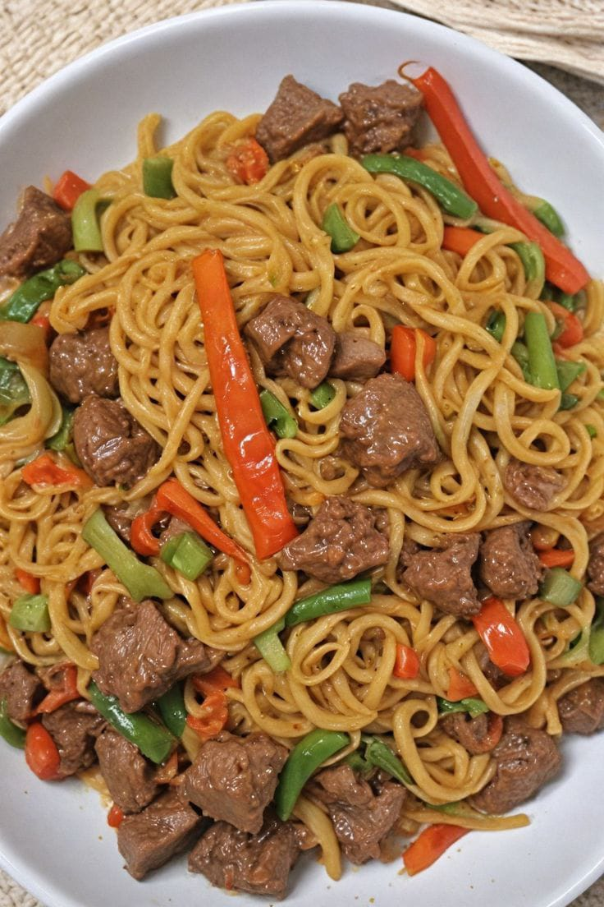

Beef Noodles is a delicious noodle dish prepared with tender pieces of beef, fresh peppers and vegetables. The ingredients are cooked together with tasty spices to create a flavorful meal.
It is a quick and satisfying meal suitable for lunch, dinner or a light meal.
| Specification | Details |
|---|---|
| Food Name | Beef Noodles |
| Category | Noodles |
| Main Ingredients | Noodles, beef, peppers and vegetables |
| Serving Size | 1 plate |
| Price | N5,500 |